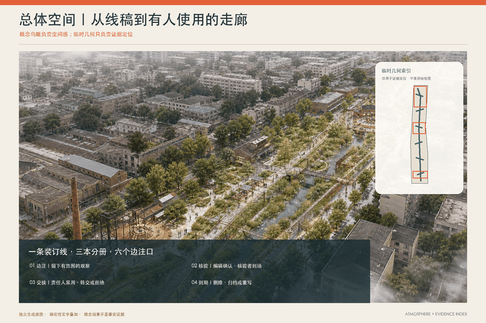
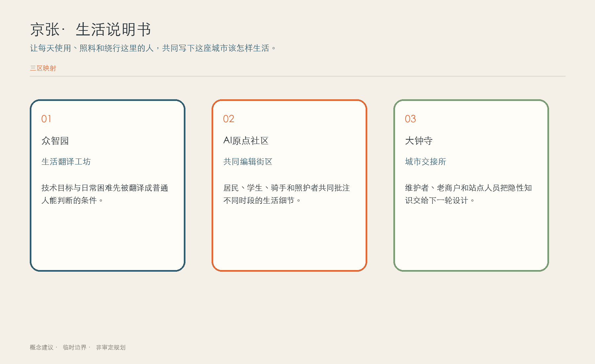
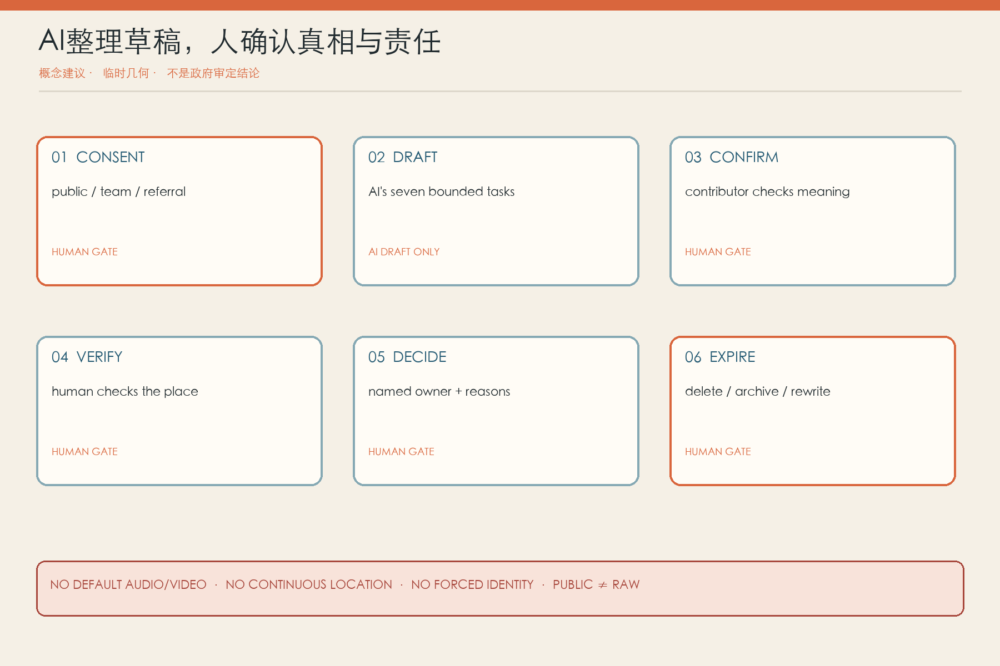
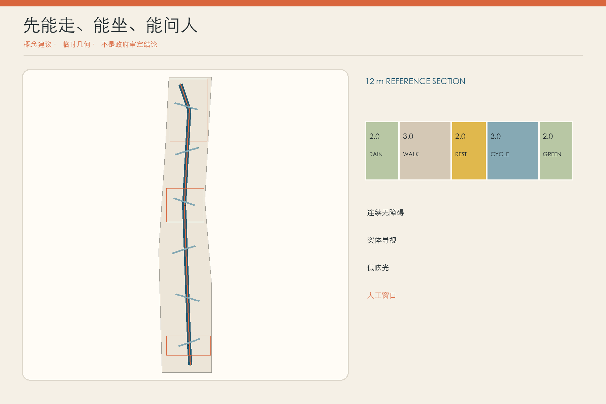

01 · 总览地图 / 三层范围 / 用地分区
一条装订线，把空间和责任装在一起
地图只表达临时边界内的设计关系：六张斜向活页、六条边注横页、绿脊、九处小型公共节点和三个非监管参考包络。

02 · 重点区域
三本分册，不是三个同款园区
01众智园《条件册》
空白第一页：先写清技术不知道什么、失败时谁接手。
02AI 原点《日常册》
多声部长桌：早午晚与雨后的分歧并排存在。
03大钟寺《交接册》
交接书脊：把维修、版本、责任与退场交给下一轮。

03 · 区域协同回路
五个邀请接口，不是五项合作承诺
北纬社区、未来科学城、怀柔科学城、经开区与京津冀目前只有任务书点名；合作、能力、数据、场地与责任单位均待核实。每个接口都允许拒绝，结果必须回写到本地页面，由本地责任人采用、转介或退出。

概念接口｜没有合作协议｜没有跨域数据池｜不声称共建、落地或联动成效
04 · AI 场景
十二张活页，从普通问题开始
以下是完整正文中已有的概念场景，不是实时服务。真实使用前，每页都须写清版本、地点与时段、风险、当前状态、责任人和到期日；观察、现场核验和人工决定分开记录。
点击或按 Enter / 空格选择；方向键切换，Home / End 跳到首尾。按 Tab 可继续到下方完整正文链接。
01 · 雨后路线
- 现场怎么做
- 雨后两小时内由核验者走一遍，标积水、台阶、围挡和当天替代线。
- AI 只做什么
- 合并同地点重复观察，生成带“待核”水印的地图草稿。
- 责任、到期与停止
- 场地/排水责任人发布临时路线；雨情或施工变化即到期；若无人当天核验则不公开导航。
02 · 电梯 / 无障碍中断
- 现场怎么做
- 检查电梯状态、坡度、路缘、门宽和绕行距离，不只看底图。
- AI 只做什么
- 翻译报修与状态文本，比较昨日/今日路径差异。
- 责任、到期与停止
- 无障碍顾问确认等价路线，设施方负责修复；电梯状态不明或替代线不可达即停用 AI 建议。
03 · 骑手与入口
- 现场怎么做
- 在不采集订单和绩效的前提下记录时段、入口规则和实际绕行。
- AI 只做什么
- 对匿名入口注释去重，按时段与规则版本聚类。
- 责任、到期与停止
- 场地主体统一门岗规则和实体导视；不得回传平台考核；规则未获门岗签认即不发布。
04 · 夜间照明
- 现场怎么做
- 居民、行人和维护者分时查看暗区、眩光、遮挡与住宅影响。
- AI 只做什么
- 把时段、天气和方向整理成待测点清单。
- 责任、到期与停止
- 照明/安全人员实测并决定调试；涉及住宅扰民或安全冲突时先用可逆灯具、暂停自动调节。
05 · 遮阴与等候
- 现场怎么做
- 在热天记录座位、树荫、排队、照护和轮椅停留，不追踪个人轨迹。
- AI 只做什么
- 生成时段热区草稿并提示样本不足。
- 责任、到期与停止
- 公共空间负责人和使用者共同选点；没有维护与补水责任时不新增高维护设施。
06 · 照护路线
- 现场怎么做
- 推车者和老人走一条完整办事路线，记录停坐、厕所、门槛和换层。
- AI 只做什么
- 生成中英/易读步骤草稿，标注不确定环节。
- 责任、到期与停止
- 人工服务员当场提供路线并核文案；涉及健康、家庭或儿童信息时转受限队列，不公开原话。
07 · 离线办事
- 现场怎么做
- 以“没有智能手机、账号或稳定网络”为默认条件完成一次任务。
- AI 只做什么
- 整理材料顺序、检测专业术语并生成易读草稿。
- 责任、到期与停止
- 人工窗口完成服务并解释缺件；AI 不判断资格；若纸面/电话路径失效，数字场景不得称为可用。
08 · 维护材料
- 现场怎么做
- 维修者比较三种材料的拆换、备件、清洁、安全和停机窗口。
- AI 只做什么
- 对历次版本、故障类型和维护说明做差异表。
- 责任、到期与停止
- 维修负责人签认条件并可拒绝不安全方案；没有付费工时和许可选择就不采编经验。
09 · 低速机器人礼让
- 现场怎么做
- 在封闭或半开放样段记录近失、盲区、儿童/轮椅反应与人工接管。
- AI 只做什么
- 对事件做初步分类、标重复情形，不预测个人行为。
- 责任、到期与停止
- 现场安全员拥有急停、恢复和清场权；出现碰撞、无法解释的误判或接管失效立即停机。
10 · 京张多声历史
- 现场怎么做
- 把档案、居民记忆、维护记录和导览文本并排，保留来源差异。
- AI 只做什么
- 链接来源、提示文本冲突、生成多语草稿。
- 责任、到期与停止
- 档案/社区编辑决定展示结构而非唯一真相；来源不明、涉及私人创伤或权利不清时不公开。
11 · 小店服务门槛
- 现场怎么做
- 小店用真实但脱敏的办事路径检查材料、入口、配送与活动影响。
- AI 只做什么
- 把资格文字易读化并路由到正确人工部门。
- 责任、到期与停止
- 责任部门解释资格与不采用理由；AI 不审批、不评分；来源过期或无法人工复核即下线。
12 · 端侧算力能耗
- 现场怎么做
- 记录设备开机时段、功耗、散热、噪声、故障与实际被使用的功能。
- AI 只做什么
- 比较版本能耗与任务量，生成关闭/替换候选。
- 责任、到期与停止
- 设施负责人决定保留、降频、关闭或替换；没有计量、维护、消防和安全断电条件时不得安装。
继续阅读完整中文说明：人物、同意与撤回、责任和试点 · Full English report
05 · 人、建筑与数据边界
AI 不在责任矩阵里
- A 具名公共/服务业主
- R 有偿社区编辑
- R 现场核验/空间翻译员
- R 行动或转交责任人
- C 隐私·无障碍·遗产·安全
- AI 不承担 A/R
六个人物是合成探针，不是代表性样本。六个边注口是借用空间中的人工服务点，不是六栋建筑。

06 · 更新项目 / 交通慢行 / 蓝绿公共空间
先做两站，24 周，到点能停

- Gate 0：业主、付费角色、场地、专业审查和转介
- 8 周：两站三种低风险场景准备
- 12 周：带无 AI 对照的真实试点
- 4 周：公开采用、拒绝、撤回、到期与交接
无具名负责人｜无付费岗位｜默认敏感原始数据｜强制实名/追踪｜抹去分歧｜无现场核验｜无人工路线｜安全事件｜超容量｜没人接行动
07 · Agent.6 年度运营
六项活动，都要有容量和停止条件
城市校对周、维修者讲台、多语校对桌、无障碍试走、失败版本展、全球交接日只在具名责任、预算、补偿、可验证输出和退出路线齐备时举行。

参与 ≠ 就业｜测试 ≠ 认证｜转介 ≠ 采购或招商｜活动人次 ≠ 合作｜任何一步都允许不继续
08 · 核心指标
11.41 km²临时总体边界
3.48%概念绿地率
0.030%概念公共空间率
648 m²三个参考包络合计
09 · 任务覆盖 / 自检状态 / 来源 / 假设
读得到，也能追到结构化证据
六项 Agent 任务、十五项设计深度、专业标准、23 项公告要求、几何和指标分别映射到三个矩阵与 JSON/GeoJSON。官方边界、控规、文保、市政、预算与真实成效仍明确为 provisional 或 unknown。
总览地图三层范围重点区域用地分区交通慢行蓝绿公共空间建筑更新项目AI 场景核心指标任务覆盖自检状态来源假设